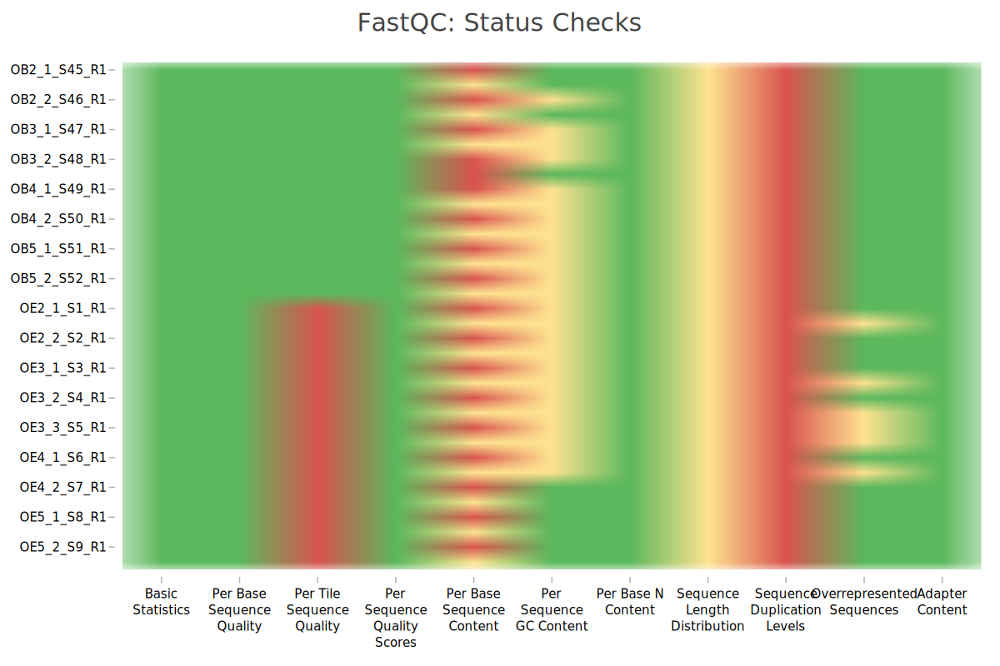

flowchart LR
A[("Raw reads")] --> B{"fastp"}
B --> C{"FastQC"} & E{"STAR"}
C --> D{"MultiQC"}
E --> F{"HTSeq"}
F --> G[("Count table")]
G --> I{"DESeq2"} & Z{"limma"} & W{"PCA"}
Z --> H{"PCA"} & J{"BioNERO"}
I --> K{"GSEA"}
J --> L{"ORA"} & N{"STRING"}
G --> V{"GSVA"}
A:::Aqua
B:::Aqua
B:::Pine
C:::Pine
E:::Pine
D:::Pine
F:::Pine
G:::Aqua
I:::Pine
Z:::Pine
W:::Pine
H:::Pine
J:::Pine
K:::Pine
L:::Pine
N:::Pine
V:::Pine
classDef Aqua stroke-width:1px, stroke-dasharray:none, stroke:#46EDC8, fill:#DEFFF8, color:#378E7A
classDef Pine stroke-width:1px, stroke-dasharray:none, stroke:#254336, fill:#27654A, color:#FFFFFF
Bulk RNA-seq analysis of mice model melanoma
Material and methods
Quality control of experimental mice transcriptomics data was performed using FastQC (v0.12.1). MultiQC tool was used for aggregation of FastQC reports [Ewels et al., 2016]. The fastp (v0.23.4) was used to filter out low-quality reads [Chen et al., 2018]. Read alignment was performed by STAR (v2.7.11) [Dobin et al., 2013] using the Mus musculus reference genome downloaded from GENCODE GRCm39.vM36 and the gtf file gencode.vM36.chr_patch_hapl_scaff.annotation.gtf. Count of gene expression profiles was performed using HTSeq count (v2.0.5) [Anders et al., 2015]. Differential expression analysis between experimental groups was performed using DESeq2 (v1.44.0) [Love et al., 2014]. Gene-set enrichment analysis (GSEA) was performed using fgsea (v1.31.6) [Korotkevich et al., 2016] and clusterProfiler (v4.12.6) [Wu et al., 2021] approaches using the following databases: MSigDB [Castanza et al., 2023]. Mapping gene identifiers between different coding systems was performed by biomaRt package. To perform the GSEA analysis using immune cells markers, a CellMarker 2.0 database were used [Hu et al., 2023]. Gene set variation analysis GSVA was used for estimating immune cell type enrichment within samples [Hänzelmann et al., 2013]. Co-expression analysis was performed using BioNERO (v1.12.0) [Almeida-Silva et al., 2022] with signed hybrid network type and Pearson correlation. Correction of expression data by differentiation method batch was performed using removeBatchEffect function from limma package [Ritchie et al., 2015]. Over-representation analysis for functional analysis of co-expressed gene modules linked to experimental groups using clusterProfiler package with MSigDB, KEGG [Kanehisa et al., 2025], Reactome [Milacic et al., 2024] and WikiPathways [Agrawal et al., 2024]. STRING database and STRINGdb Bioconductor package were used for construction of interaction networks linked to genes included to co-expressed gene modules [Szklarczyk et al., 2023]. For visualization of obtained results pheatmap (v1.0.12), ggplot2 (v3.5.1) and EnhancedVolcano packages were used. Data analysis were implemented in R (v4.4.2).
References
Database links
GENCODE: https://www.gencodegenes.org/mouse/
MSigDB: https://www.gsea-msigdb.org/gsea/msigdb
KEGG: https://www.genome.jp/kegg/
Reactome: https://reactome.org/
Wiki pathways: https://www.wikipathways.org/
CellMarker: http://www.bio-bigdata.center/
STRING: https://string-db.org/
Tool links
FastQC: https://github.com/s-andrews/FastQC
MultiQC: https://github.com/MultiQC/MultiQC
fastp: https://github.com/OpenGene/fastp
STAR: https://github.com/alexdobin/STAR
HTSeq: https://github.com/simon-anders/htseq
DESeq2: https://github.com/thelovelab/DESeq2
fgsea: https://github.com/alserglab/fgsea
clusterProfiler: https://guangchuangyu.github.io/software/clusterProfiler/
GSVA: https://bioconductor.org/packages/release/bioc/html/GSVA.html
biomaRt: https://github.com/grimbough/biomaRt
BioNERO: https://github.com/almeidasilvaf/BioNERO
limma: https://bioconductor.org/packages/release/bioc/html/limma.html
STRINGdb: https://www.bioconductor.org/packages/release/bioc/html/STRINGdb.html
pheatmap: https://github.com/raivokolde/pheatmap
ggplot2: https://github.com/tidyverse/ggplot2
EnhancedVolcano: https://github.com/kevinblighe/EnhancedVolcano
Results
Samples and experimental groups
A total of 14 transcriptomic samples corresponding to the following three experimental groups: melanoma (n=6) and melanoma with Bifidobacterium adolescentis 150 supplement (n=6) and melanoma with Lacticaseibacillus rhamnosus K32 supplement (n=2) were added to the analysis (see Table 1). The experiment was performed in two replicates: first included only melanoma and melanoma with B. adolescentis supplement groups; second included all three experimental groups. To simplify the description of the results, we adopted the following codings:
Experimental groups:
Melanoma –>
MMelanoma with B. adolescentis supplement –>
M_BIFMelanoma with L. rhamnosus supplement –>
M_BIF
Experimental batch:
First experiment –>
batch_1Second experiment –>
batch_2
Quality control
MiltiQC report

Reads filtering by quality statistic
Mapping reads to reference counts
Saving 5 x 7 in image
ANOVA
Df Sum Sq Mean Sq F value Pr(>F)
batch 1 168.0 168.00 29.735 0.00028 ***
group 2 3.0 1.50 0.265 0.77207
Residuals 10 56.5 5.65
---
Signif. codes: 0 '***' 0.001 '**' 0.01 '*' 0.05 '.' 0.1 ' ' 1